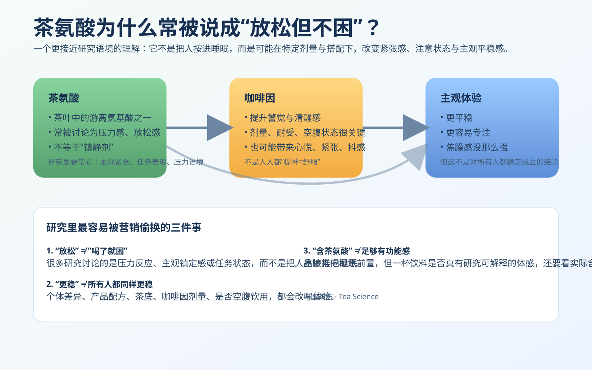
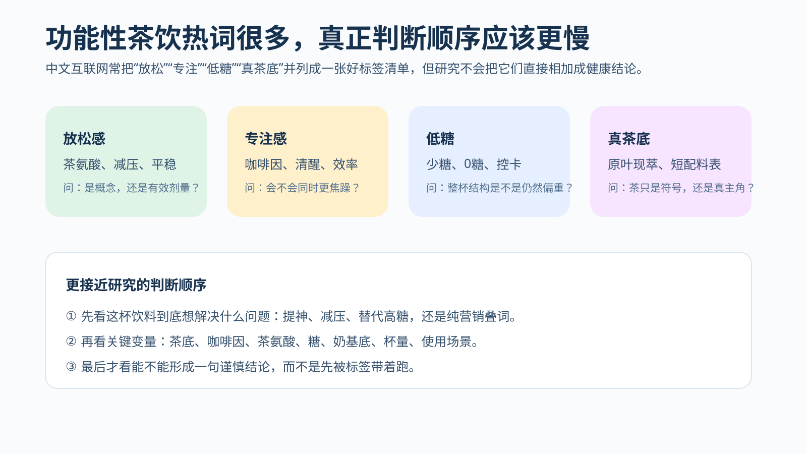
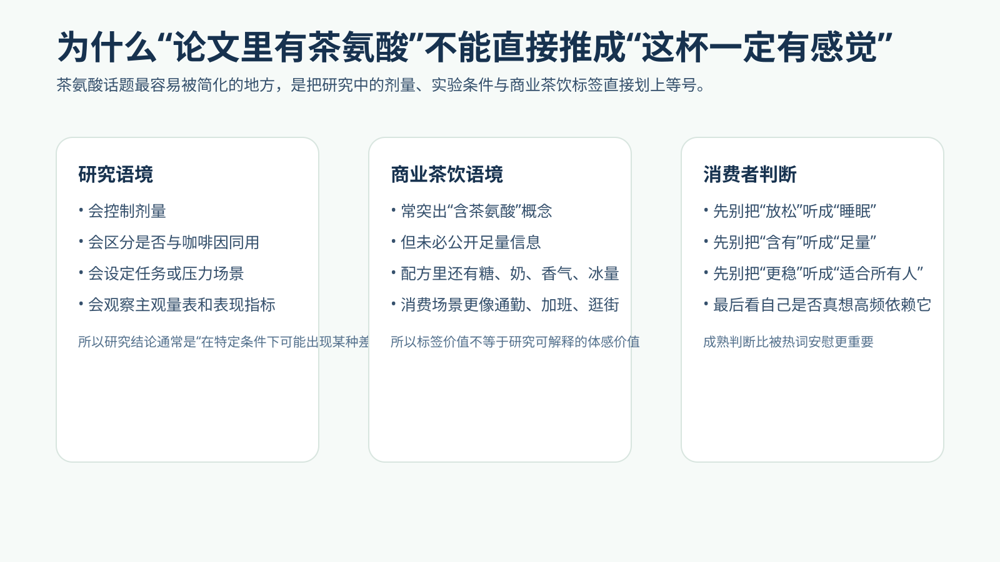

研究综述
最近两年，中文互联网里关于功能性茶饮的讨论明显变密了：有人把“茶氨酸”讲成上班族的情绪缓冲带，有人把它讲成比咖啡更温和的专注搭子，也有人把它当作一种新式健康感标签，和低糖、原叶现萃、真茶底、短配料表一起打包消费。这个词之所以会热，不只是因为它听起来像科研名词，而是因为它刚好卡在当代都市饮料想解决的几件事上：提神又不想太冲、想放松但不想犯困、想自律但又不想喝得太无聊。这篇文章要做的，不是把茶氨酸神化成万能成分，而是把它放回研究条件、真实配方和消费场景里，重新解释它到底意味着什么。
“放松但不困”是一句极其适合传播的话。它几乎同时满足了现代人对工作效率和情绪管理的双重期待：最好有一点缓冲感，但不要变钝；最好舒展一点，但不要像助眠产品那样把状态往下拉。茶氨酸于是成了一个很漂亮的叙事节点。尤其当它和茶、抹茶、轻乳茶、低糖饮品结合时，这个概念更容易看起来既天然、又科学、还带一点生活方式光泽。
但研究世界不会这么轻易给出一句漂亮口号。科研更关心的是：茶氨酸在什么剂量下被讨论？是单独摄入，还是和咖啡因一起？观察的是主观紧张感、认知任务表现，还是睡眠？实验场景是安静环境、压力任务，还是现实生活中的通勤、加班、连喝两杯商业茶饮？这些问题看上去没那么适合短视频标题，却决定了“放松但不困”这句话究竟能站住多少。

研究主题：茶氨酸在现代茶饮与功能性饮料语境中的传播、机制解释与证据边界 涉及问题：放松感、专注感、压力管理、咖啡因协同、实验剂量、商业茶饮配方、功能性营销 适合谁看：经常看到“含茶氨酸”“放松轻醒”“比咖啡更稳”等说法，想知道这些说法究竟靠不靠谱的人 核心提醒：茶氨酸是值得认真讨论的成分，但“有这个词”不等于“这杯饮料就具备稳定、可复制、对所有人都明显的功能性体验”。
因为它特别适合当代消费叙事的中间地带。现代都市人不太缺“提神”的语言，咖啡、能量饮料、功能饮、熬夜搭子，早就把清醒感做成了成熟市场；但“怎么在不被冲得太厉害的前提下维持状态”，这件事仍然有很大空间。茶氨酸被高频提起，恰好填进了这个缝隙：它不像咖啡因那样直接和刺激绑定，也不像助眠成分那样会让人担心白天不适合，于是特别容易被讲成一种更聪明、更克制、更适合工作日的成分。
另一层原因是，中文互联网本身也越来越偏爱“成分化理解”。无论是护肤、营养补充还是饮料，平台都在训练消费者用几个关键词快速认知产品。赤藓糖醇、益生菌、茶多酚、儿茶素、胶原蛋白、咖啡因、L-茶氨酸，这些词一旦进入大众词汇表，就会自然形成新的消费筛选器。品牌当然也知道这一点。对现代茶饮来说，茶氨酸是个尤其好用的词：它既来自茶，方便挂靠“天然”和“东方饮料”叙事；又有一定研究背景，不像纯情绪文案那么虚；同时还足够专业，让产品听起来不只是好喝，而是更有“状态管理”意味。
这也解释了为什么它常常不是单独出现，而是和“低糖”“真茶底”“轻负担”“白领友好”“放松轻醒”“稳定专注”一起打包。一个词负责科学感，一组词负责生活方式感，组合起来就很适合在今天的内容平台里扩散。
很多人第一次听到“放松”两个字，会本能联想到镇静、困倦、助眠，甚至把茶氨酸和褪黑素、夜用功能饮搞混。这个理解其实偏了。研究里讨论茶氨酸时，更常出现的是压力感、紧张程度、主观平稳感、某些任务环境下的注意体验，而不是把它定义成一种直接把人推向睡眠的成分。
这件事之所以重要，是因为“放松”在中文传播里太容易被想象成一个强效果词。可研究语境里的“放松”，往往没那么戏剧化。它更像是：在一些条件下，有些人可能感觉更不那么紧、没有那么躁、任务状态更平稳一点，或者在与咖啡因搭配时，主观体验没有那么尖锐。这里面没有“瞬间按下舒缓按钮”这么夸张，也不意味着喝了以后就天然适合任何需要高反应速度的场景。
把这层边界说清楚，可以避免两个常见误区。第一个误区是把茶氨酸神化成日常抗压万能钥匙；第二个误区则是听到“放松”就直接觉得白天不该碰、会让自己没精神。二者都太快了。研究真正给出的，更多是值得继续细分的问题，而不是一条一刀切生活规则。

一旦去看相关研究，就会发现科研兴趣点和消费传播兴趣点并不一样。消费者最想知道的是“有没有用”；品牌最想讲的是“更稳、更轻、更聪明”；研究者却更关心实验设计：给了多少剂量，和什么一起给，观察窗口有多长，测的是焦虑感、警觉性、注意力任务表现，还是生理指标。也就是说，研究对茶氨酸的兴趣，本质上是条件化的，而不是神奇化的。
这也是为什么茶氨酸几乎总会和咖啡因一起被反复提到。因为在现实饮茶场景里，很多人并不是在“纯茶氨酸世界”里体验状态，而是在含有咖啡因的茶饮里体验自己的日常波动。于是，一个更有讨论价值的问题就出现了：茶氨酸是不是可能在某些情况下改变咖啡因带来的主观刺激感、紧张感或者注意状态？这个问题本身就比“茶氨酸有没有用”更真实，也更贴近日常饮用经验。
但它也更容易被偷换。因为只要一提“协同”，营销就很容易把它讲成一种已经稳定成立的配方优势：仿佛只要一杯饮料里同时出现茶氨酸和咖啡因，就自动能得到“更平稳的专注”。研究不会这么写。研究更可能说：在某些实验设计和剂量条件下，观察到某些主观或任务表现差异；这些差异未必适用于所有人，也未必能在所有商业饮品里被稳定复制。
因为它像是把两种现代需求拼在了一起。咖啡因对应的是清醒、推进、启动；茶氨酸对应的是缓和、平稳、不那么毛躁。把这两个词放在同一张产品图上，等于给消费者描绘出一种非常诱人的状态：我既能工作，又不至于被刺激得太狠。这对办公室人群、学生、需要连续输出的人来说，简直像是一个理想中的折中方案。
更重要的是，这个叙事并不是完全凭空捏造。很多人确实会主观感觉茶饮和咖啡的提神体验不太一样，有的人觉得茶来得慢一点、稳一点、身体负担感没那么重。茶氨酸因此获得了一个非常有利的位置：它被当作解释这种体验差异的核心钥匙。问题在于，日常体感是多因素叠加的结果，不能轻易被压缩成单一成分决定论。茶底种类、冲泡浓度、饮用速度、空腹与否、糖和奶的存在、个体对咖啡因的耐受，都可能改写最终体验。
所以“茶氨酸 + 咖啡因”的传播吸引力，既有经验基础，也有过度简化风险。它确实抓住了一部分真实体感，但又非常容易让人忽略真正复杂的背景变量。
这是我觉得最值得警惕的一层。很多现代茶饮或功能性饮料在讲茶氨酸时，逻辑跳跃非常快：先说“含有茶氨酸”，再暗示“因此更放松、更平稳、更适合通勤办公”，最后进一步给人一种感觉——这杯饮料几乎成了更聪明、更适合频繁依赖的选择。可这三步之间，其实隔着很大的证据鸿沟。
“含有”只是存在性信息，不是剂量信息，更不是效果信息。就算一杯饮料确实含茶氨酸，也还要继续问：量有多少？和咖啡因比例如何？整杯饮料还有没有糖、奶、香气系统和其他会改变主观体感的变量？这杯饮料给你的“舒服感”，到底来自茶氨酸，还是来自较低咖啡因浓度、更柔和口味、喝的速度更慢，甚至只是你对“它比较健康”的预期？
而从“有效”跳到“适合高频喝”则是更大的偷换。研究讨论某种成分在特定条件下可能带来的差异，不等于它已经成为值得长期依赖的日常解决方案。消费者真正需要的，不是被鼓励把所有状态管理都外包给一杯饮料，而是知道这杯饮料在自己一天里的位置到底是什么。

因为这几组词刚好组成了现代茶饮最想拥有的“轻负担身份”。如果一杯饮料只有“提神”这一项，它容易被放进咖啡或功能饮的竞争里；如果它还有“低糖”，消费者会感觉身体负担更轻；如果它还能说“原叶现萃”“真茶底”，又会进一步获得一种比普通风味饮料更像茶、更值得原谅的印象；这时再加上“茶氨酸”，整杯饮料的叙事就完成了——既像茶，又像科学，还像一种更体面的都市自我照顾。
问题是，标签之间并不会自动互相证明。低糖并不证明茶氨酸有足够功能意义，真茶底也不证明整杯饮料就适合高频喝，茶氨酸这个词更不可能替代对总结构的判断。今天很多人被功能性茶饮吸引，不是因为它们已经提供了特别强的研究证据，而是因为它们把多个“看起来正确”的信号叠在了一起。这种叙事很聪明，也确实击中了时代情绪，但它依旧需要被慢慢拆开来看。
换句话说，消费者真正该学会的，不是背更多热词，而是识别“热词堆叠”本身。一个品牌越擅长把多种正确方向的词放在一起，你越需要把它们重新拆开，逐个判断。
第一，这杯饮料强调茶氨酸，究竟是在解决什么问题？ 是想减轻咖啡因的尖锐感，还是单纯制造一个更高级的概念？如果连问题都说不清，答案通常也不会太可靠。
第二，它有没有公开足够多的产品信息？ 不是所有饮料都必须像论文一样报完整剂量，但如果一个品牌把“成分功能感”当成卖点，却什么都不愿说明，那就更像是概念先行，而不是研究先行。
第三，你要的是即时体感，还是长期习惯？ 即时体感很主观，可能被风味、环境、期待共同放大；长期习惯则更现实：你是否因此更依赖甜饮、更多次摄入咖啡因、更多把情绪调节外包给一杯东西？
第四，这杯饮料除了茶氨酸，还有什么会改变它的意义？ 糖、奶基底、容量、饮用时间、是否空腹，都不该在“功能性”叙事里消失。
第五，你是否把‘更稳’误听成了‘一定更适合我’？ 这是最常见也最容易被忽略的一点。个体差异很大，对茶与咖啡的反应也不一样。有的人确实更喜欢茶饮的平稳感，有的人却可能同样被某些高咖啡因茶底刺激到。
我认为茶氨酸不是一个应该被嘲笑成纯营销的概念。它之所以能长期存在于相关研究和消费讨论里，说明它确实对应了一些值得继续追踪的问题：茶饮为什么常被一些人体验为比咖啡更平稳？压力语境下，哪些成分组合可能影响主观状态？为什么某些“放松专注”叙事会在现代工作生活里如此有吸引力？这些都不是假问题。
但值不值得认真看，和该不该被随意夸大，是两回事。更成熟的读法应该是：茶氨酸是一个值得讨论的线索，而不是一个已经把答案写完的句号。它可以帮助我们更好地理解茶饮体验、功能性饮料语言与现代状态焦虑之间的关系；但它不该被讲成任何一杯标着它名字的饮料都天然更聪明、更温和、更适合高频消费。
如果你愿意把判断做得更扎实一点，那就把茶氨酸当作一个“需要继续追问”的入口，而不是“已经放心”的理由。这会让你比大多数只看标题的人更接近研究，也更接近现实。
如果一定要把这篇文章压缩成一句话，那就是：茶氨酸值得认真讨论，因为它确实触碰到了茶饮体验、压力管理和咖啡因协同这些真实问题；但“含茶氨酸”“放松但不困”不能自动推成这杯饮料已经拥有稳定、足量、适合所有人的功能性意义。
研究能给我们的，更像是一种更慢的判断方式：先看问题是什么，再看条件是什么，再看一杯实际饮料和这些条件到底有多接近。中文互联网最擅长把一个有研究背景的概念，迅速压缩成一句会卖货、也会安慰人的话；而真正对读者有用的，是在听到这句话之后，仍然保留一点追问的耐心。
继续阅读：抹茶、咖啡因与专注状态：论文导读与体验差异、原叶现萃、低糖、短配料表就一定更健康吗、无糖茶饮、代糖与甜味剂争议、为什么“配料表透明、真茶底、少添加”成了茶饮新热点。
图片来源记录：本文新增站内本地图形素材 theanine-caffeine-mechanism-v1.svg、theanine-drink-labels-v1.svg、theanine-dose-boundary-v1.svg；已在仓库内用 file --mime-type 校验为有效 SVG 图片，来源与说明已写入 assets/img/photos/credits.json。
来源参考：PubMed：L-theanine—A unique amino acid of green tea and its relaxation effect in humans、PubMed：The combined effects of L-theanine and caffeine on cognitive performance and mood、Current Developments in Nutrition / related review coverage of tea components and cognition。